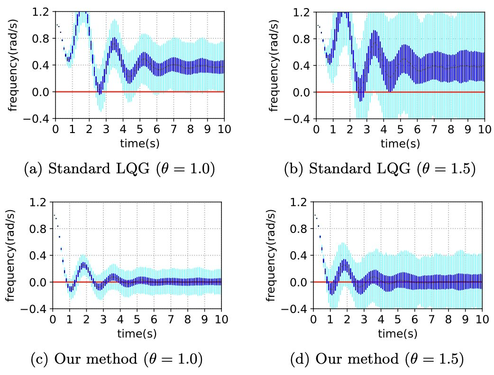

[SICON] Wasserstein linear quadratic control
The paper “ Distributional robustness in minimax linear quadratic control with Wasserstein distance ” has been published in the SIAM Journal on Control and Optimization . Distributional robustness in minimax linear quadratic control with Wasserstein distance. ...

[ICRA] Distributionally robust optimization with unscented transform for learning-based control
The paper “Distributionally Robust Optimization with Unscented Transform for Learning-Based Motion Control in Dynamic Environments” has been accepted for presentation at the 2023 IEEE International Conference on Robotics and Automation (ICRA) . Distributionally Robust Optimization with ...
ICRA2023
Distributionally robust optimization with unscented transform for learning-based motion control in dynamic environments. Astghik Hakobyan, and Insoon Yang. IEEE International Conference on Robotics and Automation (ICRA), 2023.
TAC:MaxEnt
Maximum entropy optimal control of continuous-time dynamical systems. Jeongho Kim, and Insoon Yang. IEEE Transactions on Automatic Control , 68(4):2018-2033, 2023.
SICON2023
Distributional robustness in minimax linear quadratic control with Wasserstein distance. Kihyun Kim, and Insoon Yang. SIAM Journal on Control and Optimization , 61(2):458-483, 2023.